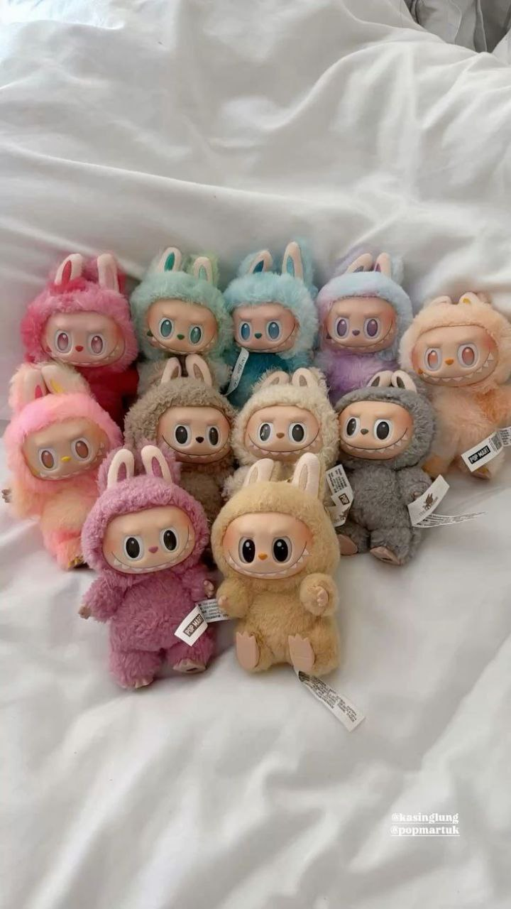
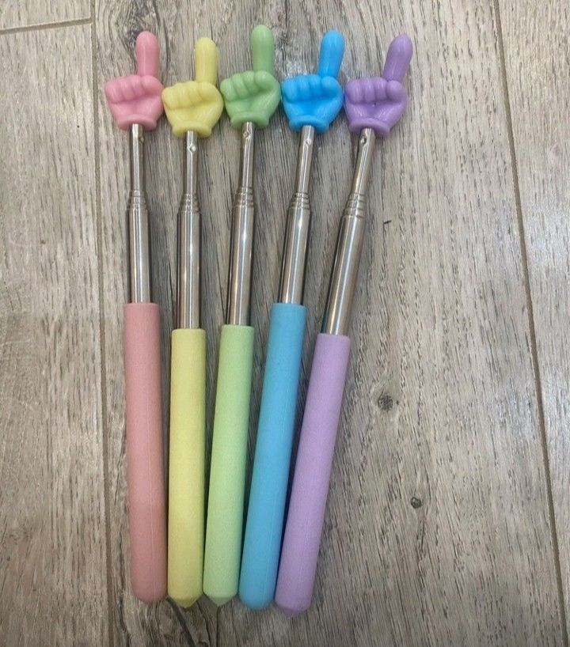
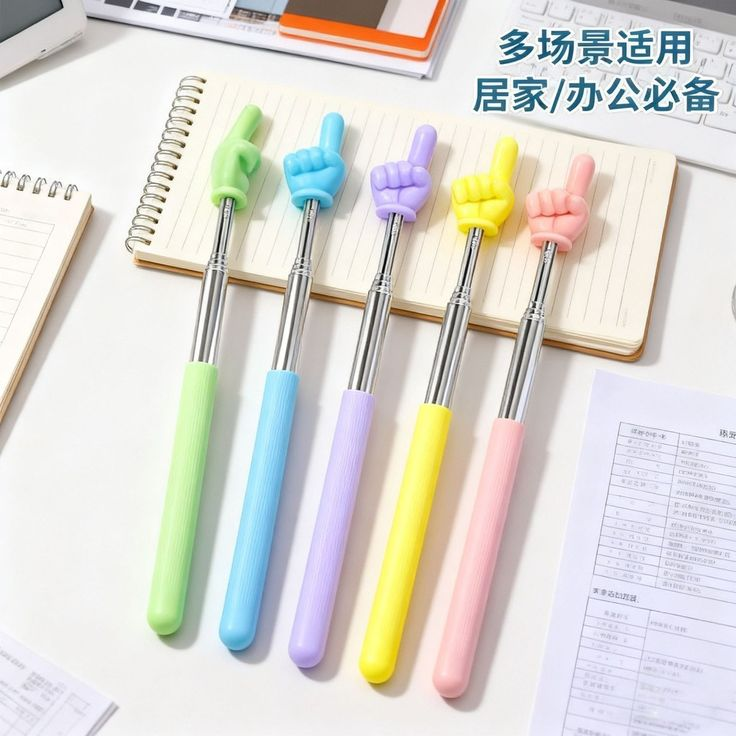
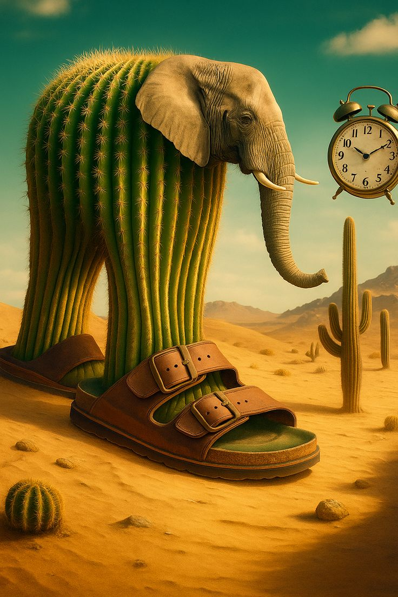

У 2025 році TikTok продовжує задавати ритм світовій попкультурі. Платформа оновлюється щодня, а тренди з’являються
швидше, ніж будь-коли. Ось найактуальніші напрямки, які захоплюють стрічки користувачів у всьому світі.




Пікмі палички
«Пікмі палички» — це телескопічні вказівники у вигляді кумедних фігурок, часто з рукою, які застосовуються в освітніх, презентаційних та розважальних цілях. Вони компактні, зручні у використанні і дозволяють виділити певний об’єкт на дошці або екрані. Зазвичай такі вказівники мають яскравий дизайн і виконані у формі фігурки з пальцем для вказівки, що робить їх не лише функціональними, а й візуально привабливими. Їх застосовують для навчання, проведення презентацій, інтерактивних занять та різних ігор.Танцювальні флешмоби
Танці в TikTok ніколи не зникають — вони лише вдосконалюються. У 2025 році популярними стали міні-рутинки з елементами хіп-хопу та сучасної хореографії. Найпопулярніші треки:«Labubu Beat» — енергійний трек під танці з масками, зображеннями лабубу. Рухи з акцентом на руки та плечі (легко повторити, виглядає ефектно).

Brainrot
“Італійські тварини” — це вірусний мем 2025 року, що складається з абсурдних, згенерованих нейромережами істот із псевдоіталійськими іменами на кшталт Бомбардіро Крокоділо, Тралалеро Тралала чи Trippi Troppi. Він виник на основі сюрреалістичних AI-зображень і швидко перетворився на так званий італійський брейнрот: яскраві, дивакуваті створіння з італійським вайбом, які одночасно викликають сміх і легкий абсурд. Завдяки своїй незвичності та нескінченній варіативності цей тренд за дуже короткий час став популярним у TikTok і породив хвилю нових мемів та наслідувань.